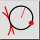
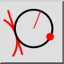
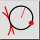
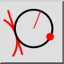

Tangenta, Točka, Polmer
Orodna vrstica / ikona:
 

Meni: Risanje > Krog > Tangenta, Točka, Polmer
Bližnjice: C, T, P
Ukazi: circletangentpointradius | ctp
Orodna vrstica / ikona:
 

Meni: Risanje > Krog > Tangenta, Točka, Polmer
Bližnjice: C, T, P
Ukazi: circletangentpointradius | ctp